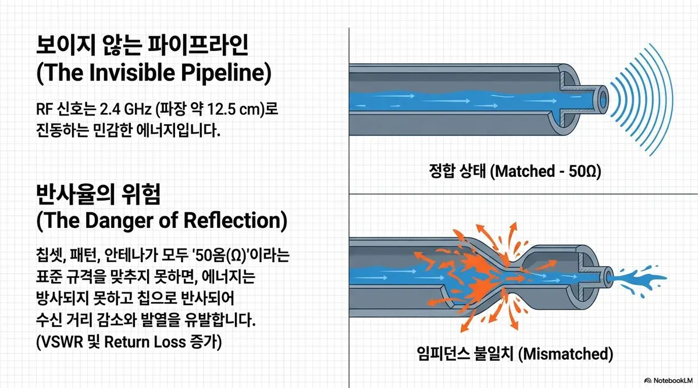
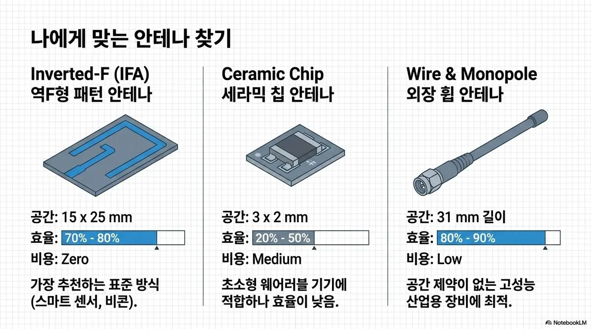

An invisible signal.
An impedance that has to match.
An RF signal is delicate energy oscillating at 2.4 GHz (a wavelength of about 12.5 cm). If the chipset, traces and antenna do not all meet the 50Ω (ohm) standard, the energy is reflected back into the chip instead of being radiated, reducing range and generating heat. (VSWR and return loss increase.)

Antennas, too.
Chosen to fit the product.

- Inverted-F (IFA) — PCB trace antenna: 15×25mm footprint, 70%–80% radiation efficiency, zero cost. Our recommended standard approach (smart sensors, beacons).
- Ceramic chip antenna: 3×2mm footprint, 20%–50% radiation efficiency. Suits ultra-compact devices, but efficiency is low.
- Wire & monopole — external whip antenna: 31mm long, 80%–90% radiation efficiency. Best for high-performance industrial equipment.
Measure, don't guess.
Matching with a VNA.
After completing port extension (phase offset) calibration on the vector network analyzer, we fine-tune the L and C values of the Pi (π) matching network until the impedance trace on the S11 Smith chart converges precisely on the 50Ω center point.